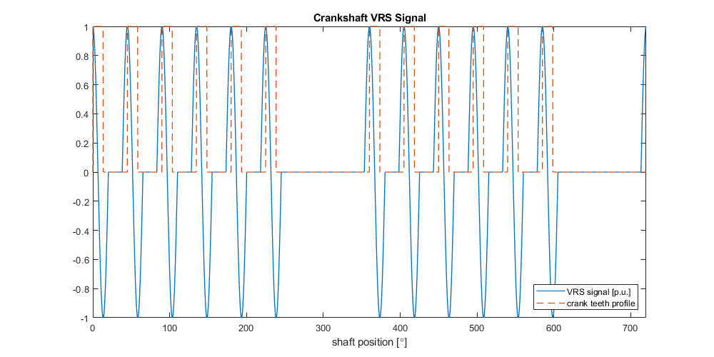
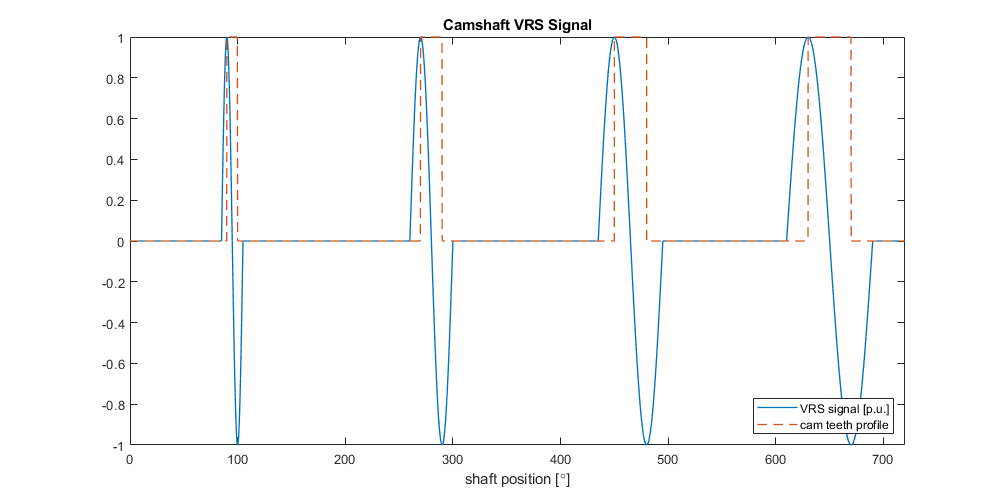

Cam and Crank - Variable Reluctance Sensor v3 — This code module emulates an analog output signal of a Variable Reluctance Sensor (VRS) to determine the position of a camshaft or crankshaft.
This code module can be used independently or as an extension to the Crank Encoder v3 code module. The module emulates an analog output signal of a Variable Reluctance Sensor (VRS) to determine the position of a camshaft or crankshaft. The VRS module can be used independently or in combination with a Crank Encoder v3 code module. In the latter case, the crankshaft position signal is inherited from the Crank Encoder module. Multiple VRS code module channels can be used in parallel and share a common shaft position signal.
The VRS signal waveform is stored in a configurable lookup table on the module. The lookup table is read out and interpolated based on the shaft position signal. One iteration is from 0 to 720 degrees. The lookup table contains 2^14 elements. It can be initialized in the driver block mask. A template for either a camshaft or crankshaft signal can be used. Alternatively a custom waveform can be loaded into the lookup table.
This driver block must be used in combination with an Analog Output block to enable and parameterize the corresponding Analog output channels.
This input signal defines the engine speed [rpm]. The input is disabled if the engine position is inherited from a second VRS channel or a Crank Encoder v3 code module.
This input signal defines the amplitude [V] of the analog VRS output signal. The output signal saturates if the analog output range is exceeded.
This input signal defines the bias [V] of the analog VRS output signal. It is limited to the range of the analog outputs of the configurable I/O module.
Engine position signal between 0 and 720 degrees. The engine speed is integrated on the module to compute the position signal at FPGA base frequency. The position signal is read back by the driver and available at this output port for further use in Simulink. This output can be enabled in the mask of the driver block.
This parameter associates a code module block with a configurable I/O module setup block. Set this value to match the Module ID defined in the setup block of the required configurable I/O module.
The number of the channel which this driver block entity will access. Only one channel per driver block can be addressed. You can specify channels in the range 1-N (N = the number of channels implemented in your specific configuration file defined in the Setup block).
Defines the base sample time at which this driver block gets its sample hit. This parameter can also be set to -1 for inherited sample time. The units are in seconds.
The VRS module inherits the shaft position signal from a Crank Encoder v3 code module channel or a second VRS code module channel if this checkbox is selected. Refer to the manual of the configuration file to learn how the position signal is shared between code modules.
Enable the position output for this driver block instance.
Invert the polarity of the signal waveform.
Generate a waveform lookup table:
For a crankshaft
For a camshaft
Based on a custom signal vector
The cam tooth start angle vector defines the starting angle of each cam tooth in degrees. The range is from 0 to 720 degrees.
The cam tooth length vector defines the length of each cam tooth in degrees. The vector length must match the number of elements of the cam tooth start angle vector.
A moving average filter can be applied to the generated waveform to smooth the signal. The width of the averaging window is defined in degrees. Set the width to zero to disable the averaging filter.
An integer number of crank teeth between 1 and 180.
A vector with the indices of the missing crank teeth.
The width of a crank tooth within one segment. The accepted range is between 0.1 and 0.5.
A vector describing a custom waveform for one iteration between 0 and 720 degrees. The number of elements is not defined. The vector will automatically be interpolated and scaled to match the lookup table size and the digital-to-analog converter resolution.
A vector providing the corresponding angle for each element of the signal vector. The angle vector must cover the range between 0 and 720 degrees and is used for interpolation of the signal vector. The units are in degrees.
The VRS code module is based on a lookup table with 214 entries. The lookup table can be initialized based on predefined patterns for a cam or crankshaft. As a third option, a custom waveform can be conditioned and loaded to the lookup table of the VRS code module. For this third option, a signal and angle vector pair must be provided covering one iteration from zero to 720 degrees.
Crankshaft
The crankshaft signal is generated based on the number of teeth, index of missing teeth, and tooth width. The generated lookup table is scaled to make use of the full resolution of the digital-to-analog converter (16-bit). The VRS signal is approximated by a sine function for each tooth such that the positive and negative edge of the tooth are aligned with the positive and negative peak of the sine wave. The tooth width is the relative length of a tooth with respect to one segment. A tooth width of 0.5 results in a continuous sine wave signal. The following graph shows an example of a generated waveform for a crankshaft. The physical location of the teeth is indicated in orange. The signal is based on the following parameters:
Number of teeth per revolution (including missing teeth): 8
Missing teeth index vector: [7,8]
Tooth width: 0.3

Camshaft
The camshaft signal is generated based on the starting angle of each tooth and its length in degrees. The generated lookup table is scaled to make use of the full resolution of the digital-to-analog converter (16-bit). The VRS signal is approximated by a sine function for each tooth such that the positive and negative edge of the tooth are aligned with the positive and negative peak of the sine wave. The following graph shows an example of a generated waveform table for a camshaft. The physical location of the teeth is indicated in orange. This example is based on the following parameters:
Cam Tooth Start Angle Vector : [90,270,450, 630]
Cam Tooth Length Vector : [10,20,30,40]

Custom
The lookup table can be initialized based on a custom waveform; for example, a custom signal can be generated based on a MATLAB® script, simulation or measurement results. The waveform must be described by a signal vector and corresponding angle vector; for example, to initialize the lookup table with a sine wave of 20 periods per 720-degree cycle, the following vectors must be provided:
Signal vector : sin([0:0.1:719.9].*(2*pi/360*10))
Angle vector : [0:0.1:719.9]